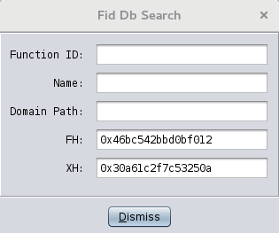

The Function ID Debug Plug-in allows users to inspect the individual records in a Function ID database. This functionality is generally only useful to users building their own databases. Users can look up individual records based on name or hash, but currently the plug-in is not capable of modifying records. The only exceptions are the “Specialized Mitigation” strategies, which can be modified using the “Debug Search Window”.
The Debug Plug-in adds options to the Function ID menu, under the Code Browser's main Tools menu. These options are in addition to those introduced by the Function ID Plug-in, which uses the same menu. In order to access the Debug options, the plug-in must be enabled. To do this, from the Code Browser select
Then click on Configure link under the Experimental section and check the box next to "FidDebugPlugin".
The Function ID Debug Plug-in introduces the following actions to the Tools -> Function ID menu.
Users can convert the read/write (.fidb) database into the a read-only (.fidbf) form. This is the more efficient final form used directly by the Function ID analyzer. The .fidbf form is uncompressed on disk and the analyzer can use it directly, where the .fidb form must be converted before use.
This action brings up a Search dialog for the currently active Function ID databases. The text entry fields correspond to the individual fields in a function record that can be searched. If the variant Debug Search Window (Current Function) is invoked, the same dialog is brought up, but the Full Hash and the Specific Hash fields are pre-populated with hashes corresponding to the function at the current address.
A search is initiated for a specific search field by entering a value and then hitting the RETURN key, with the cursor and focus still in the desired field.
|  |
This is the internal row ID for function records in the database.
This searches through function names. Searches here will match any record whose name contains the search string.
This searches through domain paths. A domain path is the file path, relative to the project root, of a program containing the function described by a particular record. Searches here will match any record whose domain path contains the search string.
This searches for records matching the full hash. The text field expects a 64-bit value. The hash can be entered as a hexadecimal string by prepending with "0x".
This searches for records matching the specific hash. The text field expects a 64-bit value. The hash can be entered as a hexadecimal string by prepending with "0x".
Invoking a search will bring up the Result Window, presenting a row for each matching function record. Columns list properties of the function and correspond to the search fields described above. In addition to these, each record/row lists a few other columns:
This is the library containing the function
This is the number of (scoring) instructions in the function's body. See “Scoring and Disambiguation”.
This is the number of distinct constant operands fed into the specific hash.
This lists any special properties that have been toggled for the particular record. The column is presented as a string of single character codes, corresponding to each possible property. Properties include the mitigation strategies described in “Specialized Mitigation”.
The Result Window supports a small number of actions under the Edit menu that allow the user to change the mitigation strategies for a read/write database. Strategies are described in “Specialized Mitigation”. When a menu action is invoked, all records displayed in the current Result Window are affected. Currently there is no way to select a subset of records to effect. The actions all set or clear a specific strategy.
Toggle the Auto Fail strategy.
Toggle the Auto Pass strategy.
Toggle the Force Specific strategy.
Toggle the Force Relation strategy.
Changes made using the Edit menu are not immediately saved back to the underlying database until this action is invoked.
This invokes an extremely low-level view into the underlying tables that back a Function ID database. It can be invoked on any attached database. A window is brought up that lists individual records in one table. A drop-down menu allows the user to switch between the different underlying tables. Most of the columns contain row keys and don't present readable values. The only meaningful table is likely to be the Libraries Table which will list each library making up the database.